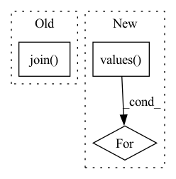

Pattern ID :42201
Before Change
out_dir = Path("out/{}_pred_model".format(timestamp))
out_dir.mkdir(parents=True)
data_in_type = "".join( s for s in cfg.in_type if not s.isdigit())
num_channels = int("".join(i for i in cfg.in_type if i.isdigit()))
num_classes = SYNPICK_CLASSES + 1 if cfg.include_gripper else SYNPICK_CLASSES
vid_type = (data_in_type, num_channels)
After Change
real = targets_full if use_full_input else targets
loss += scale * loss_fn(pred, real)
if model_losses is not None:
for loss_value in model_losses.values():
loss += loss_value
// bwd
optimizer.zero_grad()In pattern: SUPERPATTERN
Frequency: 4
Non-data size: 3
Instances Fragment ID: 118747747
Project Name: ais-bonn/vp-suite
Commit Name: fad2f90c44c219d2af842dddbb66ecc4feae7d7c
Time: 2021-09-01
Author: boltres@ais.uni-bonn.de
File Name: train_pred_model.py
M Class Name: AnonimousClass
N Class Name: AnonimousClass
M Method Name: main(1)
N Method Name: main(1)
M Parent Class:
N Parent Class:
M File Name: train_pred_model.py
N File Name: train_pred_model.py
M Start Line: 26
M End Line: 149
N Start Line: 26
N End Line: 158
Before Change
cls.convert(dataset.get_subset(subset), save_dir=save_dir, **kwargs)
conv = cls(dataset, save_dir=save_dir, **kwargs)
images_dir = osp.join( save_dir, CvatPath.IMAGES_DIR)
for (item_id, subset), status in patch.updated_items.items():
if status != ItemStatus.removed:
item = patch.data.get(item_id, subset)
else:After Change
else:
ids_to_remove.setdefault(item_id, (item, True))
for item, to_remove in ids_to_remove.values():
if not to_remove:
continue
image_path = osp.join(save_dir, CvatPath.IMAGES_DIR, Fragment ID: 118747745
Project Name: openvinotoolkit/datumaro
Commit Name: 51defd35980fa12f662d8a8cce839277e84c8f82
Time: 2021-07-19
Author: maxim.zhiltsov@intel.com
File Name: datumaro/plugins/cvat_format/converter.py
M Class Name: CvatConverter
N Class Name: CvatConverter
M Method Name: patch(4)
N Method Name: patch(4)
M Parent Class: Converter
N Parent Class: Converter
M File Name: datumaro/plugins/cvat_format/converter.py
N File Name: datumaro/plugins/cvat_format/converter.py
M Start Line: 382
M End Line: 397
N Start Line: 391
N End Line: 421
Before Change
}
// cls.dataset_path = os.path.join("/", "data", "sets", "opendr_kitti")
cls.dataset_path = os.path.join( "/", "data", "sets", "opendr_mini_kitti")
// Download all required files for testing
// cls.pose_estimator.download(path=os.path.join(cls.temp_dir, "tanet_xyres_16_pretrained"))
After Change
cls.temp_dir, True, cls.subsets_path
).path
for model_name in cls.download_model_names.values():
VoxelObjectDetection3DLearner.download(
model_name, cls.temp_dir
)
Fragment ID: 118747749
Project Name: opendr-eu/opendr
Commit Name: bf2b66801cfa42cf65cad9fe9053c68e3eceea80
Time: 2021-03-12
Author: io@ece.au.dk
File Name: tests/sources/tools/perception/object_detection_3d/voxel_object_detection_3d/test_object_detection_3d.py
M Class Name: TestVoxelObjectDetection3DLearner
N Class Name: TestVoxelObjectDetection3DLearner
M Method Name: setUpClass(1)
N Method Name: setUpClass(1)
M Parent Class: unittest.TestCase
N Parent Class: unittest.TestCase
M File Name: tests/sources/tools/perception/object_detection_3d/voxel_object_detection_3d/test_object_detection_3d.py
N File Name: tests/sources/tools/perception/object_detection_3d/voxel_object_detection_3d/test_object_detection_3d.py
M Start Line: 90
M End Line: 90
N Start Line: 46
N End Line: 105
Before Change
def setUpClass(cls):
print("\n\n*********************************\nTEST Object Detection GEM Learner\n"
"*********************************")
cls.temp_dir = os.path.join( "tests", "sources", "tools",
"perception", "object_detection_2d",
"gem", "gem_temp")
cls.model_backbone = "resnet50"
cls.learner = GemLearner(iters=1,After Change
device=DEVICE,
)
for learner in cls.learners.values():
learner.download(mode="pretrained_gem")
print("Model downloaded", file=sys.stderr)
Fragment ID: 118747743
Project Name: opendr-eu/opendr
Commit Name: fe91adf6a794fcaf719da9cafdd910dc3eed5df9
Time: 2022-02-21
Author: 43064291+jelledouwe@users.noreply.github.com
File Name: tests/sources/tools/perception/object_detection_2d/gem/test_gem.py
M Class Name: TestGemLearner
N Class Name: TestGemLearner
M Method Name: setUpClass(1)
N Method Name: setUpClass(1)
M Parent Class: unittest.TestCase
N Parent Class: unittest.TestCase
M File Name: tests/sources/tools/perception/object_detection_2d/gem/test_gem.py
N File Name: tests/sources/tools/perception/object_detection_2d/gem/test_gem.py
M Start Line: 51
M End Line: 75
N Start Line: 63
N End Line: 78